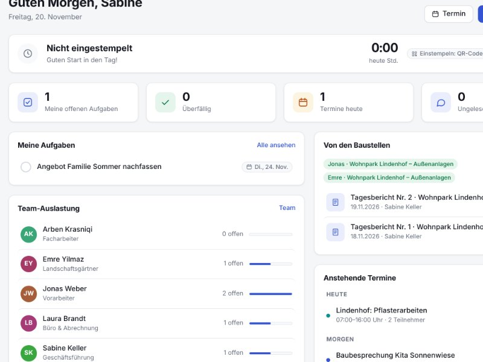
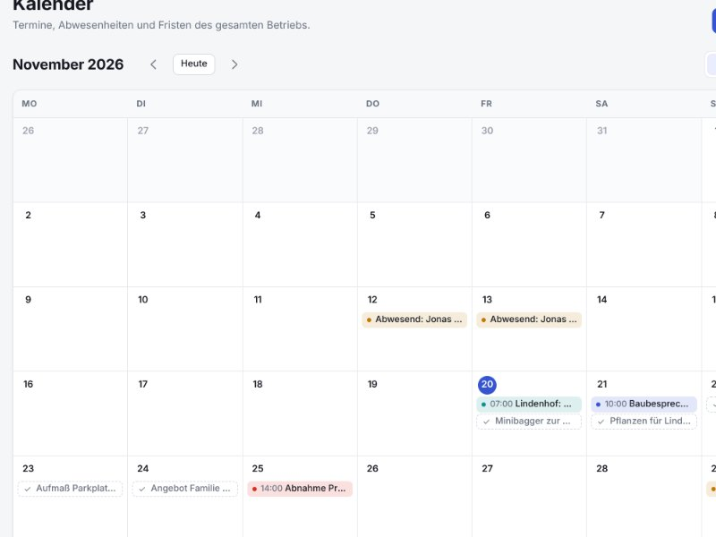
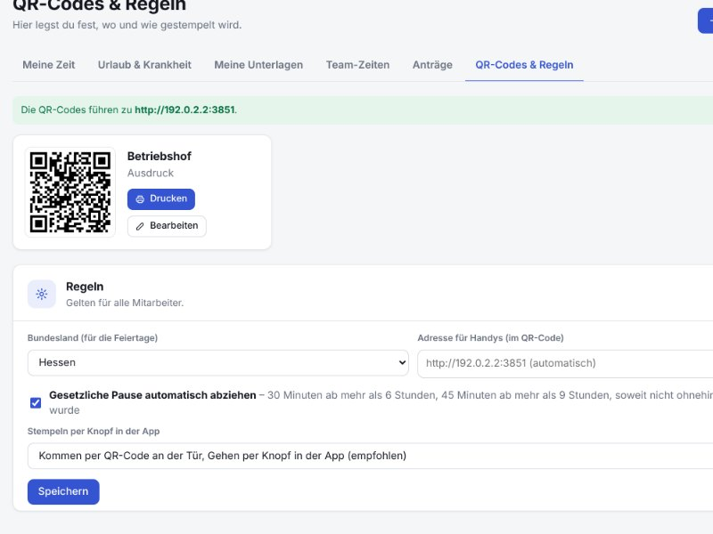
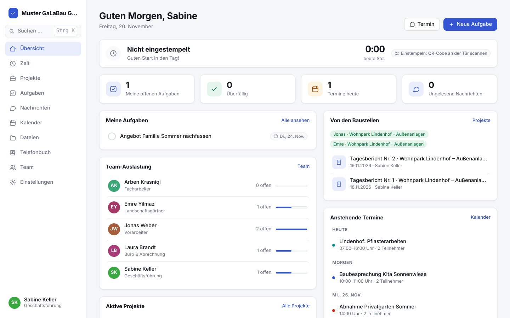

Büro und Baustelle digital führen.
Software für Zeiterfassung, Bautagesbericht und Projekte – für GaLaBau, Bau und Handwerk.
Mit dem Betriebsportal erfassen Ihre Mitarbeiter Arbeitszeiten per QR-Code, dokumentieren die Baustelle mit Fotos und schreiben den Tagesbericht direkt am Handy. Im Büro sehen Sie Stunden, Urlaub, Projekte und Termine an einem Ort. Das Programm läuft auf Ihrem eigenen Computer und ist in wenigen Minuten eingerichtet.
Software für Ihre Branche

Garten- & Landschaftsbau
- Stunden je Baustelle
- Fotos vom Baufortschritt
- Tagesbericht mit Material und Maschinen
- Einsatzplanung der Kolonnen
- Urlaub und Krankmeldung
Bau & Tiefbau
- Bautagebuch mit Wetter und Personal
- Fotos mit Uhrzeit und Standort
- Unterschrift des Auftraggebers
- Mappen für Pläne und Abnahmen
- Stunden für die Nachkalkulation

Handwerk
- Aufträge mit allen Unterlagen
- Termine und Einsatzorte je Mitarbeiter
- Zeiterfassung per QR-Code
- Aufgaben mit Fälligkeit
- Nachrichten an das ganze Team

Dienstleister
- QR-Code je Objekt oder Fahrzeug
- Nachweis: wer war wann wo
- Stundenkonto und Überstunden
- Foto-Nachweise mit Beschreibung
- Monatsauswertung für das Lohnbüro
Warum Betriebsportal?
Entwickelt in einem Garten- und Landschaftsbaubetrieb, der es selbst jeden Tag einsetzt. Kein Baukasten und keine Schulung: Das Programm ist fertig, Sie legen Mitarbeiter und Projekte an und arbeiten.
Bereit für den Alltag ohne Stundenzettel?
Laden Sie das Programm herunter und richten Sie es selbst ein. Wenn Sie Unterstützung möchten, begleiten wir Sie dabei.
Jetzt herunterladen
Funktionen im Überblick
Alles, was zwischen Büro und Baustelle täglich anfällt – in einem Programm, das am Computer und am Handy läuft.
Zeiterfassung per QR-Code
Code ausdrucken und an die Tür hängen. Morgens scannen, abends in der App ausstempeln.
Stundenkonto & Urlaub
Überstunden, gesetzliche Pausen und Feiertage je Bundesland. Urlaubsantrag und Krankmeldung digital.
Bautagesbericht
Personal aus den Stempelzeiten, Maschinen, Material, Wetter und Unterschrift – als PDF mit Fotos.
Foto-Dokumentation
Mehrere Fotos am Stück. Beschreibung, Uhrzeit, Standort und Name werden festgehalten.
Spracheingabe mit Übersetzung
Mitarbeiter sprechen in ihrer Sprache ein. Im Bericht steht der Text auf Deutsch, das Original darunter.
Projekte & Unterlagen
Lieferscheine, Rechnungen, Pläne und Aufgaben je Projekt. PDF und Bilder öffnen direkt im Programm.
Kalender & Einsatzplanung
Das Büro trägt ein, wer wann wo ist. Jeder sieht seine Termine und freien Tage.
Nachrichten
An alle oder an Einzelne, mit Anhang. Am Computer erscheint eine Meldung mit Ton.
Eigener Baustellen-Bereich
Mitarbeiter draußen sehen nur, was sie brauchen – keine Rechnungen, keine Kundendaten.
Ihre Vorteile mit dem Betriebsportal
Ihre Daten bleiben bei Ihnen
Das Portal läuft auf Ihrem eigenen Computer oder Server – nicht in einer fremden Cloud.
In Minuten eingerichtet
Herunterladen, Hauptrechner wählen, Konto anlegen. Ohne Techniker und ohne Vorkenntnisse.
Durchgängig statt Insellösung
Zeiten, Fotos, Berichte und Projekte hängen zusammen und müssen nicht doppelt erfasst werden.
Aus der Praxis entwickelt
Entstanden im eigenen Betrieb und orientiert an echten Abläufen im Büro und auf der Baustelle.
Immer aktuell
Neue Funktionen und Korrekturen kommen als Update von selbst auf alle Geräte.
Sicher bei Ausfall
Stündliche Sicherung, zusätzlich als normale Ordner und Tabellen – lesbar auch ohne das Programm.
So richten Sie das Betriebsportal ein
Ein Computer im Büro wird der Hauptrechner. Mehr braucht es für den Start nicht.
Herunterladen und installieren
Datei öffnen – das Programm installiert sich selbst und startet. Eine Lizenznummer ist nicht nötig.
Hauptrechner festlegen
Auf einem Büro-Computer „Das ist der Hauptrechner“ wählen und Ihr Administrator-Konto anlegen.
Mitarbeiter einladen
Weitere Computer finden den Hauptrechner im Netzwerk von selbst. Mitarbeiter erhalten eine Einladung per WhatsApp oder E-Mail.
Zugriff von unterwegs: Im Büro-WLAN funktioniert das Portal sofort, auch am Handy. Sollen Mitarbeiter von der Baustelle oder von zu Hause zugreifen, zieht das Portal auf einen kleinen gemieteten Server um und nimmt Ihre Daten mit. Bei der Einrichtung unterstützen wir Sie.
Download
Dasselbe Programm für den Hauptrechner und für jeden weiteren Arbeitsplatz.
Windows
Für Windows herunterladenZeigt Windows „Der Computer wurde geschützt“? Klicken Sie auf Weitere Informationen und dann auf Trotzdem ausführen. Die Meldung erscheint bei neuen Programmen, bis sie häufig genug installiert wurden.
Mac
Für Mac herunterladenFür Macs mit Apple-Chip. Version für ältere Macs mit Intel-Chip. Beim ersten Start mit Rechtsklick → Öffnen starten und einmal bestätigen.
Aktuelle Version 1.10.2 · Handy und Tablet: im Browser öffnen und „Zum Startbildschirm hinzufügen“ wählen.
Häufige Fragen
Wo liegen unsere Daten?
Auf Ihrem Hauptrechner im Büro – nicht bei uns und nicht in einer fremden Cloud. Ziehen Sie später auf einen Server um, mieten Sie ihn selbst; auch dann gehören die Daten Ihnen.
Brauchen wir einen Server oder ein Netzlaufwerk?
Nein. Ein normaler Büro-Computer genügt als Hauptrechner; er sollte während der Arbeitszeit eingeschaltet sein. Die stündliche Sicherung können Sie auf ein Netzlaufwerk, eine USB-Festplatte oder in einen Cloud-Ordner legen.
Was passiert, wenn der Hauptrechner ausfällt?
Das Programm sichert jede Stunde alle Daten und Dateien. Auf einem neuen Computer installieren Sie das Programm und spielen die letzte Sicherung ein. Zusätzlich liegt alles als normale Ordner und Tabellen vor.
Gibt es eine App für das Handy?
Das Portal läuft im Browser jedes Handys und lässt sich wie eine App auf den Startbildschirm legen – ohne App-Store. Kamera-Ansicht, Mikrofon und Standort funktionieren, sobald das Portal über eine sichere Adresse (https) erreichbar ist.
Wie funktioniert das Stempeln?
Sie drucken einen QR-Code aus und hängen ihn an die Tür oder ins Fahrzeug. Der Mitarbeiter scannt ihn morgens mit der Handy-Kamera und ist eingestempelt; ausgestempelt wird per Knopf in der App. Für jede Baustelle kann es einen eigenen Code geben, dann landen die Stunden direkt beim richtigen Projekt.
Können Mitarbeiter alles sehen?
Nein. Sie legen je Person fest, ob sie zum Büro oder zur Baustelle gehört. Baustellen-Konten sehen ihre Zeiten, ihre Termine, Fotos und Tagesberichte – aber keine Rechnungen, Kundenkontakte oder Stunden anderer.
Was kostet die Übersetzung bei der Spracheingabe?
Dafür nutzt das Portal einen KI-Dienst, bei dem Sie ein eigenes Konto anlegen. Eine Aufnahme kostet dort etwa einen Cent. Ohne dieses Konto funktioniert alles andere wie gewohnt.